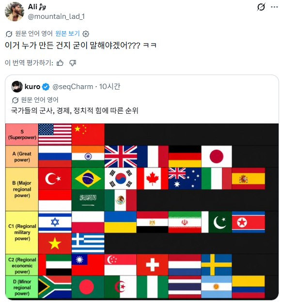

브라질인가? 브라질이 저기낄 짬밥이 아닌데

브라질인가? 브라질이 저기낄 짬밥이 아닌데
지정학적 이점으로 지역 패권을 갖고 있는 나라들이 있음
뭐 예를 들면 터키 브라질 인도 남아공 이런애들임...
미국중국이 전교 1등 2등이면, 터키 브라질 인도 남아공은 반1등인거지
인니 맞네
ㅋㅋㅋㅋ바로 보인다는데 댓글창에선 의견 존나 갈리네ㅋㅋㅋ
인도가 저기 낄건 아니라 B로 와야할듯 한데
브라질은 지역강국 맞는데?
브라질이 좆밥처럼 보여도 남미에서는 미국 다음임
경제적 영향, 외교적 영향, 군사적 영향 다 따졌을 때는 대충 그럴만 한 것 같은데
슈퍼파워 : 세계적 영향력
열강 : 범 대륙적 영향력
지역강국 : 해당 대륙/일부에서 강한 영향력
그 아래로는 군사력이나 기타 지위를 이용해서 다른 지역강국이나 그 이상 국가들에게 영향을 가하면서 국제적인 영향력을 가하는 놈들이고
맞는 것 같은데. 비급 갔다고 너무 열폭하지말어
저거 major regional powe근거로만 대보기엔 맞다고하기에도 엉터리임.
정작 인도는 찾아보면 지역권력이라 B티어 한참아래여야맞는데 A티어이지..
브라질이 좆밥으로 보이냐 ㅋㅋㅋㅋㅋㅋ
솔직히 ㅈ밥으로보이긴해
땅 크기만 보면 미국보다도 커
너 치킨 먹기 싫어?
왜안됨?
중국이 그레이트 파워는 맞는데 슈퍼파워냐는 애매한거같은데 대만이있으니
아니고 대강 맞는거같긴한데
러시아 아직도 저 정도인가? 뭔가 레드팀 편향적인 느낌
A에 러시아 인도 먼저 배치한 것도 그렇고... GDP 순위로는 독일 일본 순이니까
미국을 앞에 배치한건 중국을 앞에 배치하면 진짜 티나서 그런거 같음
한국에 태어나게 해주셔서 감사합니다 ㅠㅠ
저거는 인도도 아니고 인도네시아 새끼들이네. 쟤넨 왜 저러고 사냐 진짜
남미 애들은 저런 음흉한짓 못함 보통 동남아 애들임
북한이 좀 위에 있길래 보니깐 군사력같은데
브라질 위치가 높아보이긴 하지만 저 위치가 이상하지도 않음. 다만 브라질의 라이벌 아르헨티나를 저 밑에 밖아놓았다는게ㅋㅋㅋㅋㅋㅋ
브라질도 정상은 아니라지만 아르헨티나 요즘 맛탱이 제대로 가있다보니 ㅋㅋㅋㅋ
인도가 만든거 같기도 하고....
티어만 보지말고 1:1 대입 해보면 인니말곤 납득이 가는 배치임
c등급부터는 국기도 잘몰라! 히히
이집트랑 이스라엘은 한 티어 위 아닌가
내 생각은 인도계열 미국인 정도애가 만든거 같음ㅋㅋ 인도가 대단한건 사실이지만 워낙 빈부격차가 심하고 낙후되서 A급은 아닌듯
브라질이 한번 급부상해서 저자리 올라간거라 40대분들 어릴때 브라질 생각하면 저 자리가 이상하게 느껴질순 있음
인도나 사우디로 보이는데
다른 국가에서 만들어도 중국은 슈퍼파워 맞는데
얼추 맞는거아님? 그래서 어느나라에서 만든건데
북한이 베트남ㅋㅋ씹
베트남ㅋㅋ